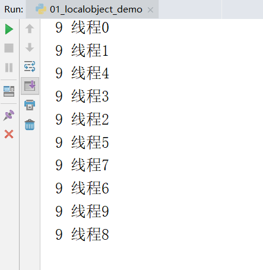
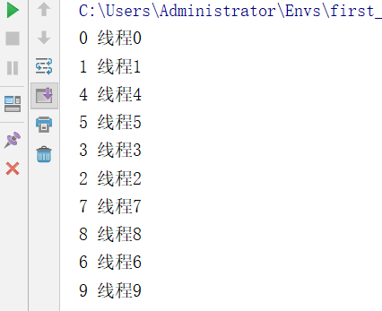
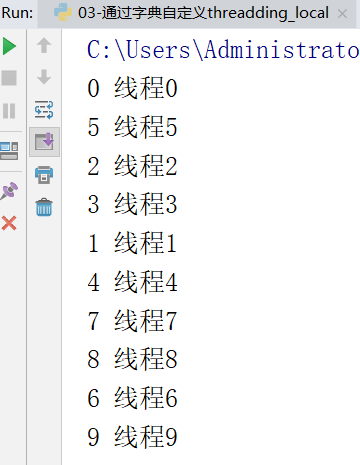

我们每一个请求进来的时候都开一个进程肯定不合理，那么如果每一个请求进来都是串行的，那么根本实现不了并发，所以我们假定每一个请求进来使用的是线程。
那么线程中数据互相不隔离，存在修改数据的时候数据不安全的问题。
假定我们的需求是，每个线程都要设置值，并且该线程打印该线程修改的值。
from threading import Thread,current_thread
import time
class Foo(object):
def __init__(self):
self.name = 0
locals_values = Foo()
def func(num):
locals_values.name = num
time.sleep(2) # 取出该线程的名字
print(locals_values.name, current_thread().name)
for i in range(10):
# 设置该线程的名字
t = Thread(target=func,args=(i,),name='线程%s'%i)
t.start()很明显阻塞了2秒的时间所有的线程都完成了修改值，而2秒后所有的线程打印出来的时候都是9了，就产生了数据不安全的问题。

所以我们要解决这种线程不安全的问题，有如下两种解决方案。
方案一：是加锁
方案二：使用threading.local对象把要修改的数据复制一份，使得每个数据互不影响。
我们要实现的并发是多个请求实现并发，而不是纯粹的只是修改一个数据，所以第二种思路更适合做我们每个请求的并发，把每个请求对象的内容都复制一份让其互相不影响。
详解：为什么不用加锁的思路？加锁的思路是多个线程要真正实现共用一个数据，并且该线程修改了数据之后会影响到其他线程，更适合类似于12306抢票的应用场景，而我们是要做请求对象的并发，想要实现的是该线程对于请求对象这部分内容有任何修改并不影响其他线程。所以使用方案二
多个线程修改同一个数据，复制多份数据给每个线程用,为每个线程开辟一块空间进行数据存储
实例：
from threading import Thread,current_thread,local
import time
locals_values = local()
# 可以简单理解为，识别到新的线程的时候，都会开辟一片新的内存空间，相当于每个线程对该值进行了拷贝。
def func(num):
locals_values.name = num
time.sleep(2)
print(locals_values.name, current_thread().name)
for i in range(10):
t = Thread(target=func,args=(i,),name='线程%s'%i)
t.start()
如上通过threading.local实例化的对象，实现了多线程修改同一个数据，每个线程都复制了一份数据，并且修改的也都是自己的数据。达到了我们想要的效果。
实例：
from threading import get_ident,Thread,current_thread
# get_ident()可以获取每个线程的唯一标记，
import time
class Local(object):
storage = {}# 初始化一个字典
get_ident = get_ident # 拿到get_ident的地址
def set(self,k,v):
ident =self.get_ident()# 获取当前线程的唯一标记
origin = self.storage.get(ident)
if not origin:
origin={}
origin[k] = v
self.storage[ident] = origin
def get(self,k):
ident = self.get_ident() # 获取当前线程的唯一标记
v= self.storage[ident].get(k)
return v
locals_values = Local()
def func(num):
# get_ident() 获取当前线程的唯一标记
locals_values.set('KEY',num)
time.sleep(2)
print(locals_values.get('KEY'),current_thread().name)
for i in range(10):
t = Thread(target=func,args=(i,),name='线程%s'%i)
t.start()讲解：
利用get_ident()获取每个线程的唯一标记作为键，然后组织一个字典storage。
如：｛线程1的唯一标记：{k:v}，线程2的唯一标记：{k:v}.......｝
｛
15088: {'KEY': 0},
8856: {'KEY': 1},
17052: {'KEY': 2},
8836: {'KEY': 3},
13832: {'KEY': 4},
15504: {'KEY': 5},
16588: {'KEY': 6},
5164: {'KEY': 7},
560: {'KEY': 8},
1812: {'KEY': 9}
}运行效果：

实例：
from threading import get_ident,Thread,current_thread
# get_ident()可以获取每个线程的唯一标记，
import time
class Local(object):
storage = {}# 初始化一个字典
get_ident = get_ident # 拿到get_ident的地址
def __setattr__(self, k, v):
ident =self.get_ident()# 获取当前线程的唯一标记
origin = self.storage.get(ident)
if not origin:
origin={}
origin[k] = v
self.storage[ident] = origin
def __getattr__(self, k):
ident = self.get_ident() # 获取当前线程的唯一标记
v= self.storage[ident].get(k)
return v
locals_values = Local()
def func(num):
# get_ident() 获取当前线程的唯一标记
locals_values.KEY=num
time.sleep(2)
print(locals_values.KEY,current_thread().name)
for i in range(10):
t = Thread(target=func,args=(i,),name='线程%s'%i)
t.start()我们可以自定义实现了threading.local的功能，但是现在存在一个问题，如果我们想生成多个Local对象，但是会导致多个Local对象所管理的线程设置的内容都放到了类属性storage = {}里面，所以我们如果想实现每一个Local对象所对应的线程设置的内容都放到自己的storage里面，就需要重新设计代码。
实例：
from threading import get_ident,Thread,current_thread
# get_ident()可以获取每个线程的唯一标记，
import time
class Local(object):
def __init__(self):
# 千万不要按照注释里这么写，否则会造成递归死循环，死循环在__getattr__中,不理解的话可以全程使用debug测试。
# self.storage = {}
# self.get_ident =get_ident
object.__setattr__(self,"storage",{})
object.__setattr__(self,"get_ident",get_ident) # 借用父类设置对象的属性，避免递归死循环。
def __setattr__(self, k, v):
ident =self.get_ident() # 获取当前线程的唯一标记
origin = self.storage.get(ident)
if not origin:
origin={}
origin[k] = v
self.storage[ident] = origin
def __getattr__(self, k):
ident = self.get_ident() # 获取当前线程的唯一标记
v= self.storage[ident].get(k)
return v
locals_values = Local()
locals_values2 = Local()
def func(num):
# get_ident() 获取当前线程的唯一标记
# locals_values.set('KEY',num)
locals_values.KEY=num
time.sleep(2)
print(locals_values.KEY,current_thread().name)
# print('locals_values2.storage：',locals_values2.storage) # 查看locals_values2.storage的私有的storage
for i in range(10):
t = Thread(target=func,args=(i,),name='线程%s'%i)
t.start()显示效果我就不做演示了，和前几个案例演示效果一样。
情况一：单进程单线程，基于全局变量就可以做
情况二：单进程多线程，基于threading.local对象做
情况三：单进程多线程多协程，如何做？
提示：协程属于应用级别的，协程会替代操作系统自动切换遇到 IO的任务或者运行级别低的任务，而应用级别的切换速度远高于操作系统的切换
当然如果是自己来设计框架，为了提升程序的并发性能，一定是上诉的情况三，不光考虑多线程并且要多协程，那么该如何设计呢？
在我们的flask中为了这种并发需求，依赖于底层的werkzeug外部包，werkzeug实现了保证多线程和多协程的安全，werkzeug基本的设计理念和上一个案例一致，唯一的区别就是在导入的时候做了一步处理，且看werkzeug源码。
werkzeug.local.py部分源码
...
try:
from greenlet import getcurrent as get_ident # 拿到携程的唯一标识
except ImportError:
try:
from thread import get_ident #线程的唯一标识
except ImportError:
from _thread import get_ident
class Local(object):
...
def __init__(self):
object.__setattr__(self, '__storage__', {})
object.__setattr__(self, '__ident_func__', get_ident)
...
def __getattr__(self, name):
try:
return self.__storage__[self.__ident_func__()][name]
except KeyError:
raise AttributeError(name)
def __setattr__(self, name, value):
ident = self.__ident_func__()
storage = self.__storage__
try:
storage[ident][name] = value
except KeyError:
storage[ident] = {name: value}分析：
原理就是在最开始导入线程和协程的唯一标识的时候统一命名为get_ident，并且先导入协程模块的时候如果报错说明不支持协程，就会去导入线程的get_ident，这样无论是只有线程运行还是协程运行都可以获取唯一标识，并且把这个标识的线程或协程需要设置的内容都分类存放于__storage__字典中。